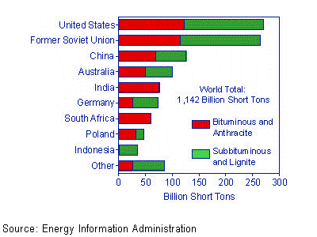

The above graph shows the world recoverable coal reserves. Data shown for the United States represent recoverable reserves as of December 31, 1995. Data for all other countries are as December 31, 1993.